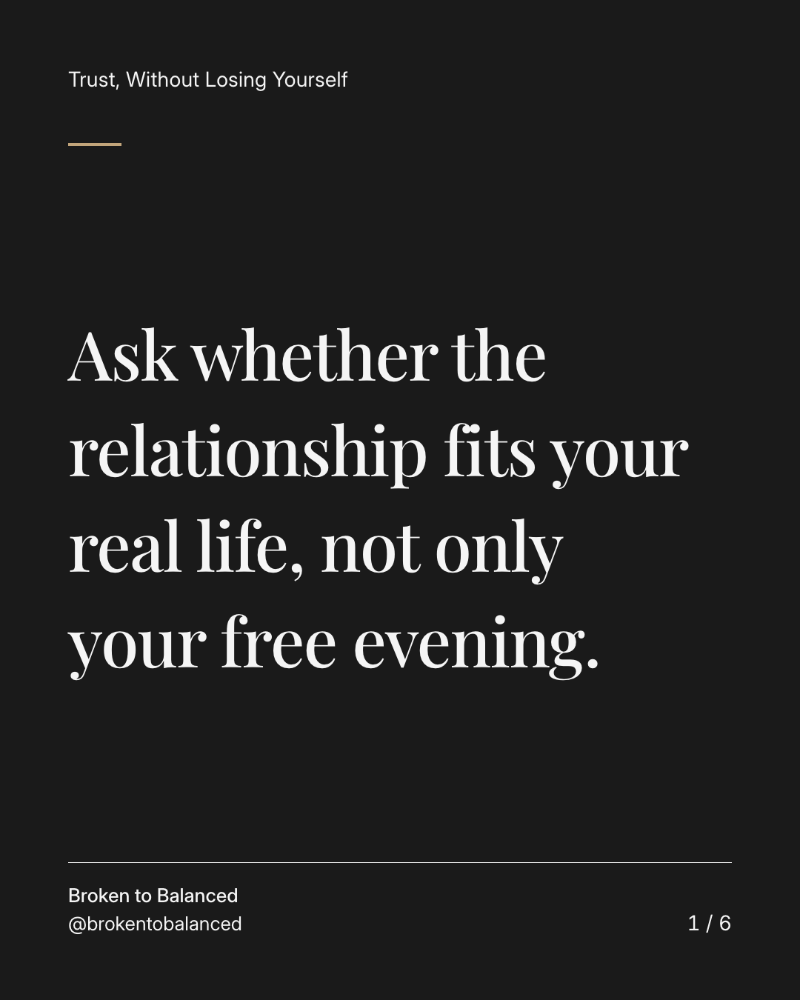
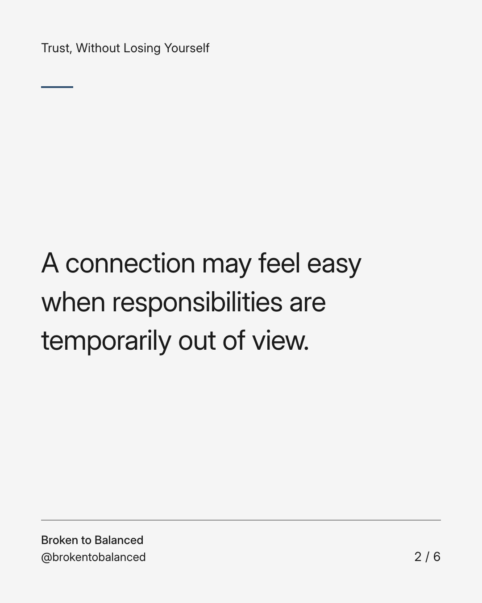
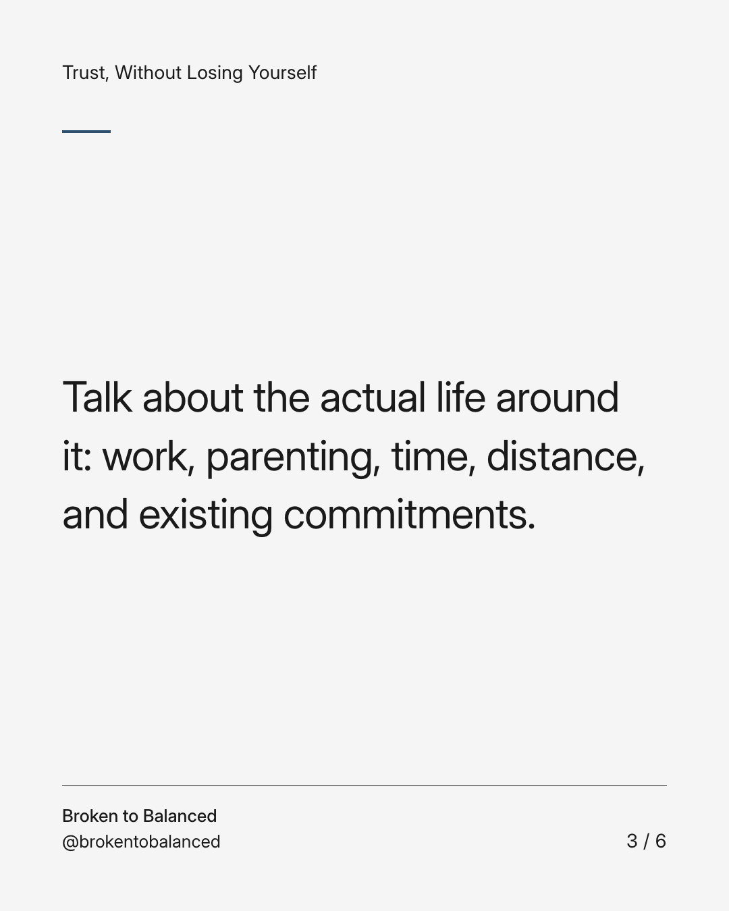
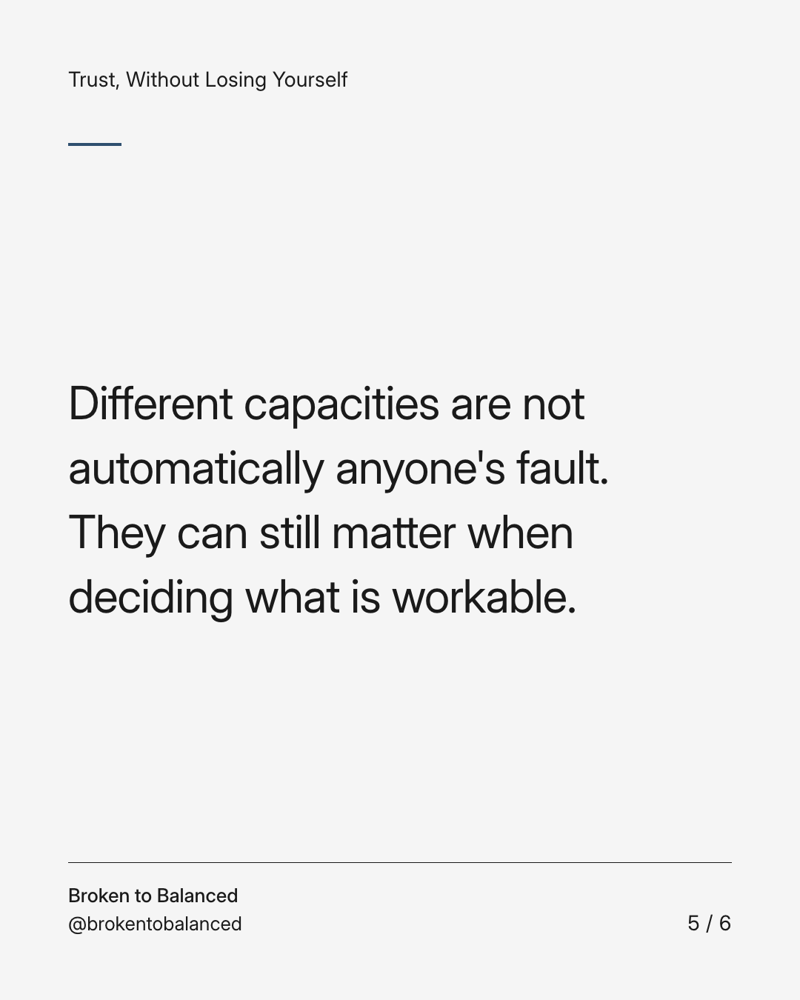
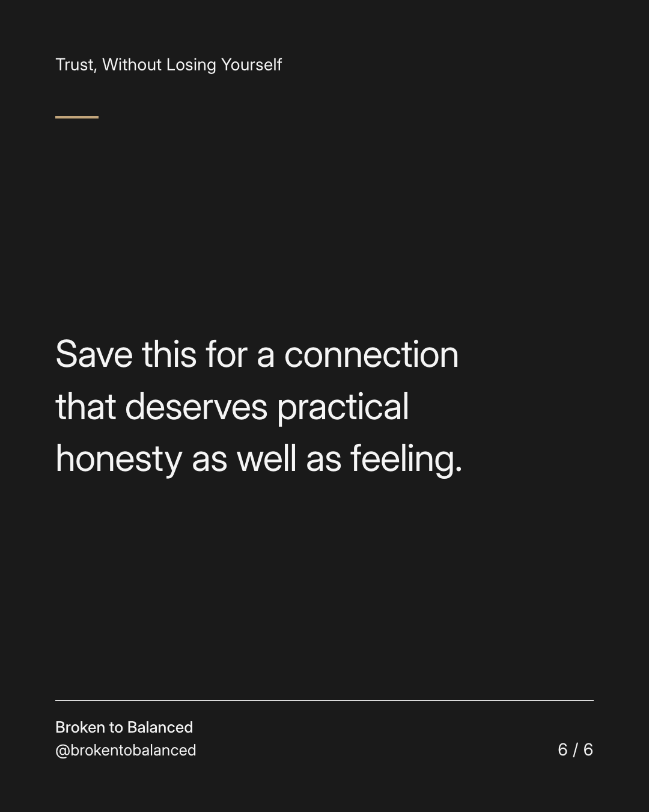

Exact text and accessibility text
Ask whether the relationship fits your real life, not only your free evening.
Slide 1 of 6. Ask whether the relationship fits your real life, not only your free evening.


Exact text and accessibility text
A connection may feel easy when responsibilities are temporarily out of view.
Slide 2 of 6. A connection may feel easy when responsibilities are temporarily out of view.


Exact text and accessibility text
Talk about the actual life around it: work, parenting, time, distance, and existing commitments.
Slide 3 of 6. Talk about the actual life around it: work, parenting, time, distance, and existing commitments.

Exact text and accessibility text
Ask what each person can offer now, not what you might offer in an imaginary version of the future.
Slide 4 of 6. Ask what each person can offer now, not what you might offer in an imaginary version of the future.


Exact text and accessibility text
Different capacities are not automatically anyone's fault. They can still matter when deciding what is workable.
Slide 5 of 6. Different capacities are not automatically anyone's fault. They can still matter when deciding what is workable.


Exact text and accessibility text
Save this for a connection that deserves practical honesty as well as feeling.
Slide 6 of 6. Save this for a connection that deserves practical honesty as well as feeling.
Exact caption
Plain-text fallback: select and copy the caption.